Your record, in your colour
Tell Stack your copy is marble, splatter, galaxy, half and half or a picture disc, and the record spinning in the player changes to match the one on your shelf.
Portfolio project · App, brand and pitch
A prototype app for people who collect vinyl and CDs, where owning the record is what unlocks it everywhere. This is how I designed it, built it and pitched it, down to the smallest details.
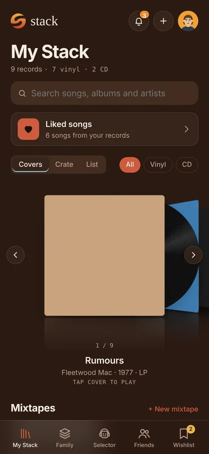
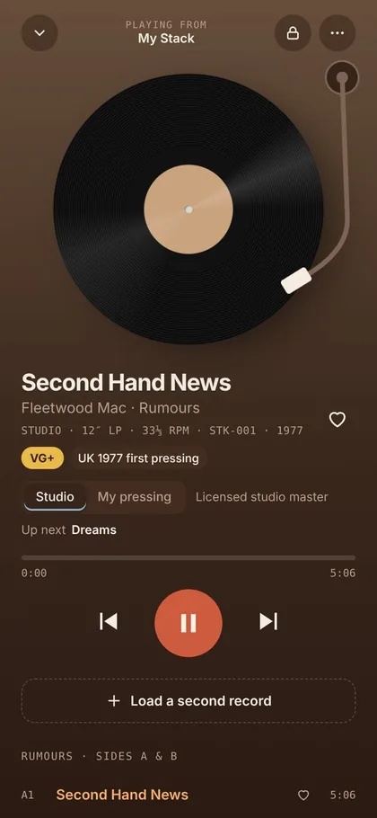
“What if owning the record was the thing that unlocked it everywhere?”
It started with a friend. They had shelves of vinyl and kept buying more, but still paid for Spotify every month to listen to music, including records they already owned. I don't collect records myself, but that struck me as a bit weird, and like a problem I could design a way around.
Streaming made music easy to reach but hard to own. Albums can vanish from a subscription overnight, and a playlist is rented space, not a collection. Meanwhile people keep buying vinyl and CDs, because they want something they actually own.
The trouble is that records and phones don't talk to each other. If you own Rumours on vinyl, you can't play it on the bus. You pay again to stream music you already bought.
Stack is my answer. Every feature is there to make owning music feel better than renting it: your shelf becomes your library, your family shares one collection, lending works like lending a real record, and when you sell a record the digital copy goes with it.
Your records as covers, a crate you flick through, or a list. Add them by search, barcode or a Discogs import.
A spinning record and tonearm, two decks with a crossfader, and a mode that adds the crackle of a real pressing.
One shared shelf for the people you live with, showing whose copy each record is.
Listen along in a friend's room, answer a monthly theme, and compare stats, streaks and badges.
A robot DJ who digs through your crate and builds a queue from records you own.
Second-hand records between collectors. When the record arrives, the digital copy moves to the buyer.
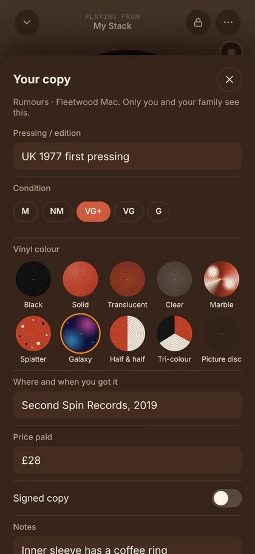
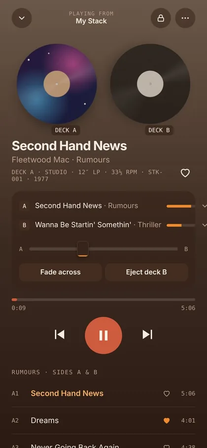
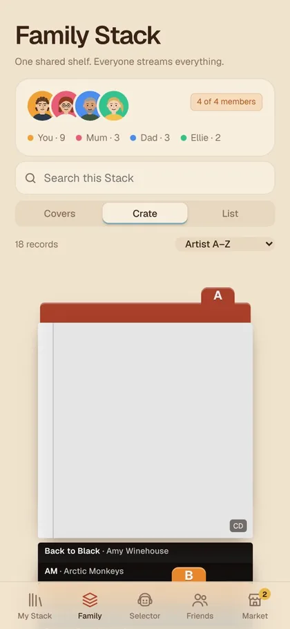
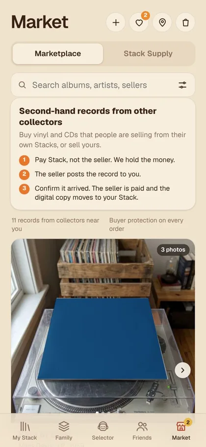
The first version was black and orange, like a lot of music apps. Then I put it in front of people for product testing, and the feedback was blunt: in black and orange, it looked like an adult entertainment site. Not the vibe for a record collection.
So I gave it a 70s feel instead. The black became a warm espresso brown, like an old record sleeve, and the orange stopped being the only colour.
The brand became the Sunset Stripe: the warm colours of a 70s record shop, sleeve paper and wood. Mustard, orange, red and sky, always in that order, over cream and espresso. The rule is even written into the code as a comment: no black UI, rust for actions. Type is Geist for everything, with Shrikhand saved for the odd flourish, like the quote above.
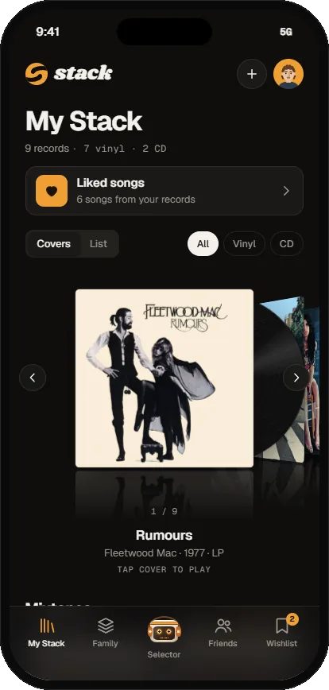
Every good record shop has someone behind the counter who knows exactly what you want. In Stack that's DJ Selector, a cel-shaded robot DJ with headphones, a sunset headband, the S on his chest and a VU meter for a face, so his expressions are made of the bars on a level meter.
I drew him from a fixed turnaround so he's always the same robot: the head wider than the body, thin coiled legs, orange shoes. He's in the app, the film, the stickers, the pixel emoji and the merch, and the brand guidelines have rules for using him like a guest star rather than plastering him everywhere.
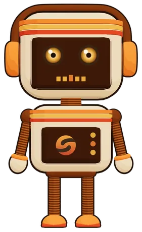
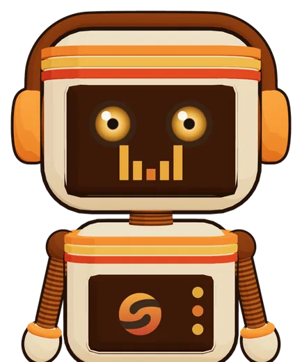
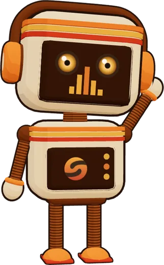
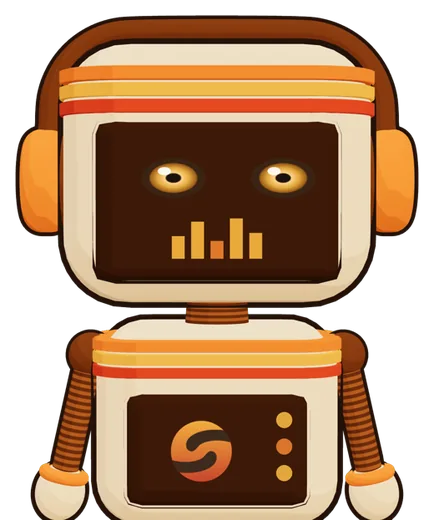
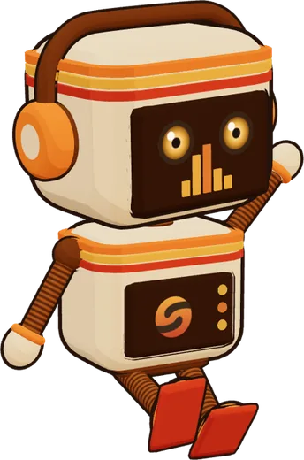
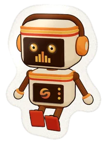
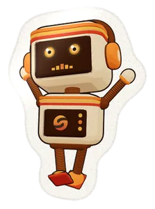
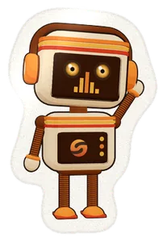
Stickers and pixel emoji, drawn from the same model.
The first thing you see in Stack is a short 3D film, rendered live in the browser with three.js rather than played as a video. DJ Selector runs along a spinning record like a treadmill, explains what Stack is and how the Puck works, then gets flung off. The camera dives into the record's label, which spins and becomes the loading screen.
It has its own sound: a needle drop, crackle, a warm chord spinning up to speed and a spin-down whoosh at the end. You can pause it and skip between sections.
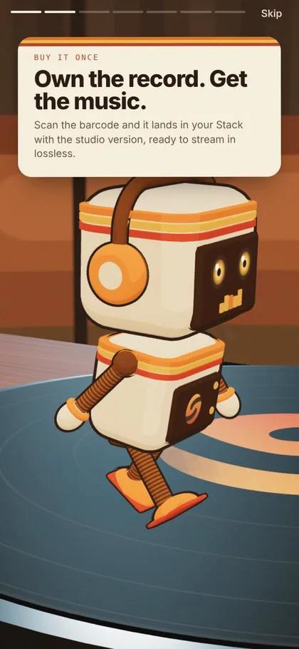
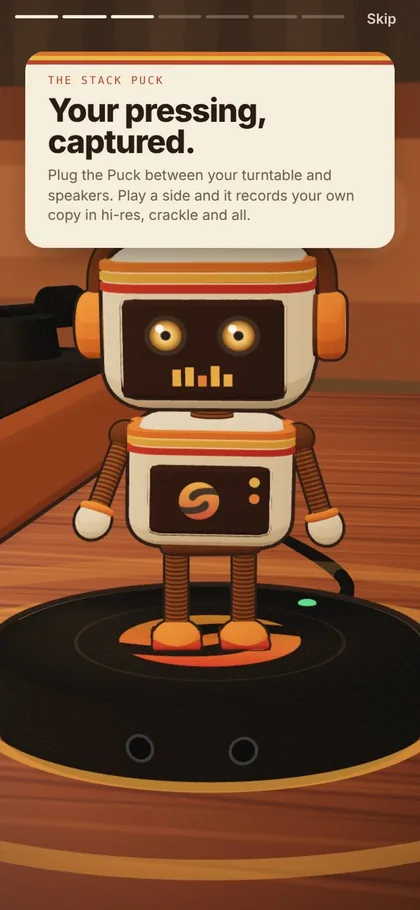
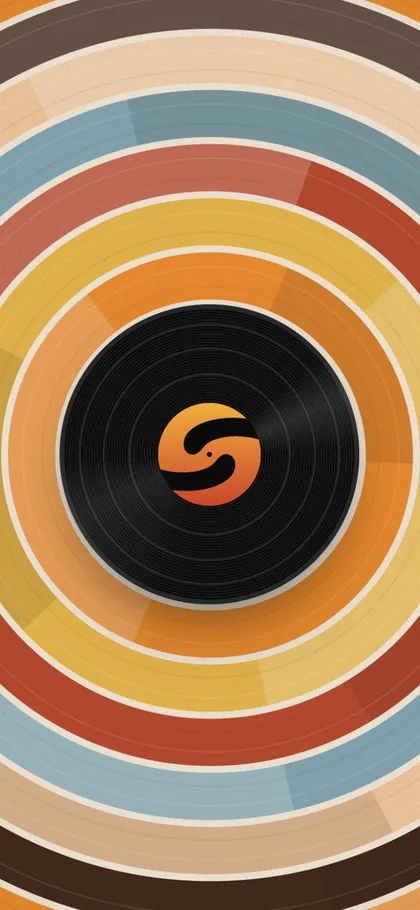
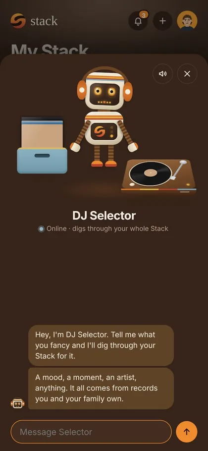
Most of Stack's charm is in things you'd only notice by using it. These are my favourites.
Tell Stack your copy is marble, splatter, galaxy, half and half or a picture disc, and the record spinning in the player changes to match the one on your shelf.
DJ Selector's face is a VU meter. While he digs through your crate the bars bounce; when your queue is ready they settle into a U, a smile made of levels.
Scroll past the top or bottom and the page stretches like rubber to reveal the Sunset Stripe underneath, then springs back. Pull far enough at the bottom and DJ Selector is there, hanging off the edge of the page by his hands.
"My pressing" mode lays surface noise, pops and a slight turntable wobble over the music. A padlock locks the screen against accidental touches, and the screen stays awake while a record plays.
Crate view lets you flick through your records one by one, the way you'd dig through a crate in a record shop, instead of scrolling a grid.
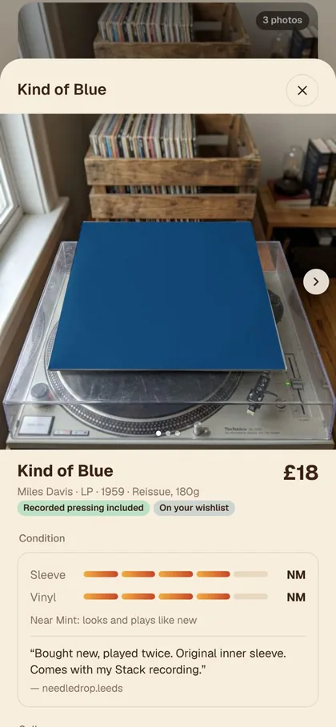
Lend a record and it's your friend's to play, not yours, until they give it back. Sell one and you lose the digital copy the moment the buyer confirms it arrived, exactly like handing it over.
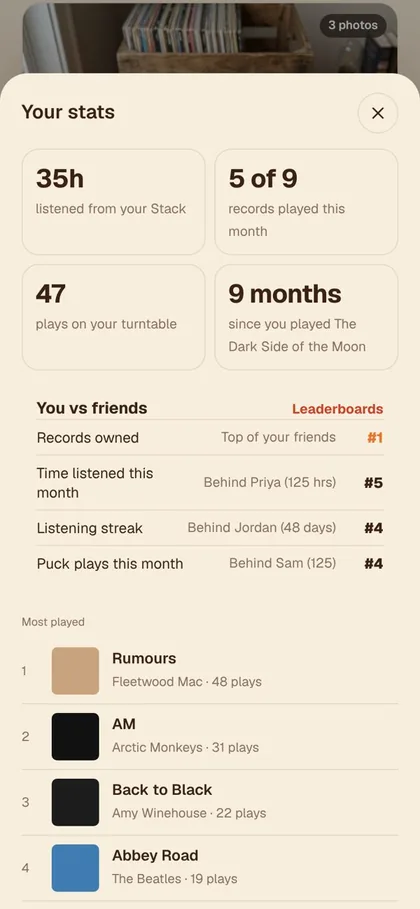
Stack notices the record you haven't played in months and gives you a nudge to put it on. Your stats and a year-end Wrapped count real spins and digital plays together.
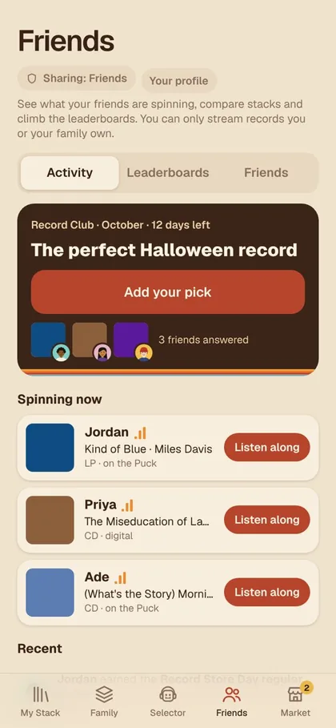
Every month has a theme, like the perfect Halloween record in October. Answer with any album, owned or not, and your picks build up on your profile.
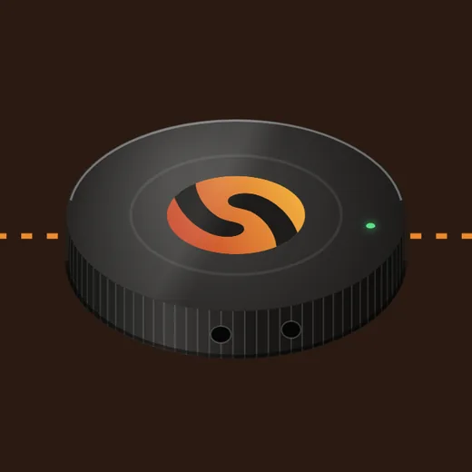
A small device that sits between your turntable and speakers. It records your own copy of each record in hi-res, crackle and all, and logs what you play, so a real spin counts towards your stats. It's simulated in the app, but it's how Stack could prove you own a record. Its 3D render in the app comes from a small renderer I wrote by hand: a bevelled cylinder with the logo inlaid, an LED and its ports. And it isn't only on screen: I 3D printed a real one.
To make the idea real, I 3D printed the Puck, so the device from the film and the app is an object you can pick up and put next to a turntable.
A brand like this should exist off the screen too, so Stack has its own shop inside the Market tab: 70s-style clothing, record gear and the Puck. The garments are my own designs, shown as AI-generated mockups made for the project.
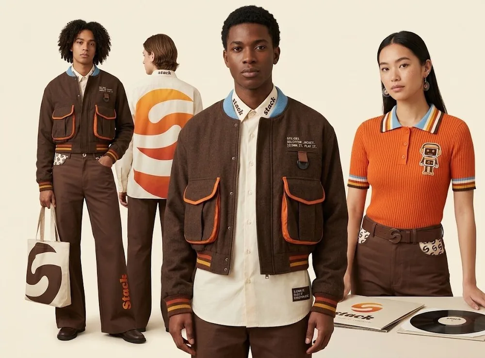
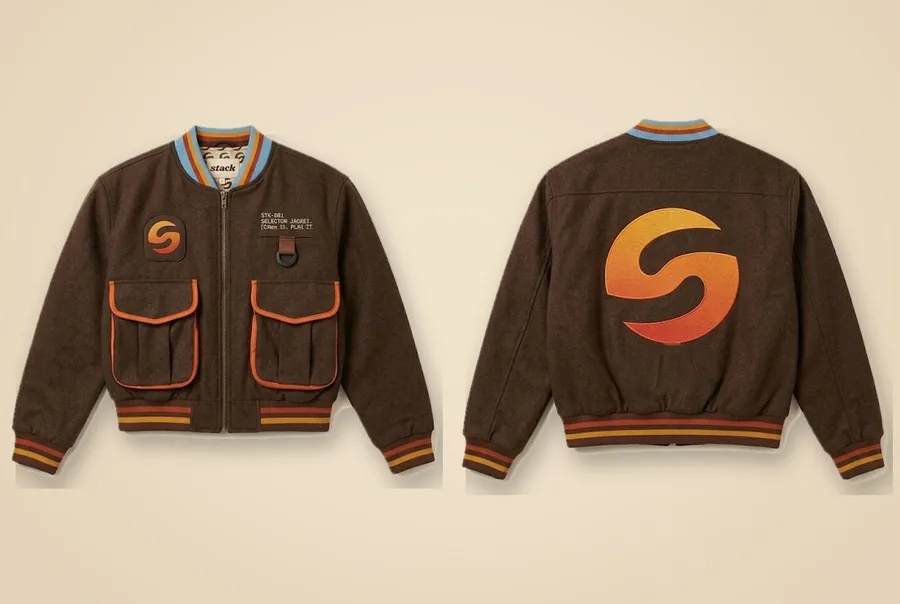
All of it lives in a 24-page brand book: the voice ("talk like a friend who works in a record shop"), the logo system, the sunset palette and its contrast checks, type, DJ Selector's turnaround, expressions and rules, the stickers, merch and even rules for developers.
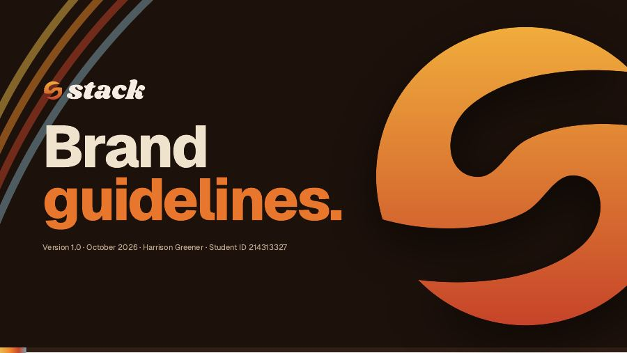
Stack was made as a university project, so it had to be pitched as well as built. The pitch site holds a three-minute video, an animated pitch deck and a business plan, with the live prototype on the same page.
I wanted the prototype to be honest about what it is. It's not a product on sale, and it says plainly what's real and what's simulated, along with the open questions a real version would face, like licences from labels and how you prove you own a record.
| Real | Simulated |
|---|---|
| The whole interface, navigation and interactions | Accounts, friends, profiles and leaderboard figures |
| 30-second previews and artwork, looked up live from Apple Music and Deezer | Full-length playback and ownership checks |
| Crossfades and record noise through the Web Audio API | The Puck, barcode scanning and Discogs import |
| The 3D film, built in code | Listening rooms and live activity |
| The marketplace flow: fees, held payment, ownership moving on arrival | Other sellers, payments and deliveries |